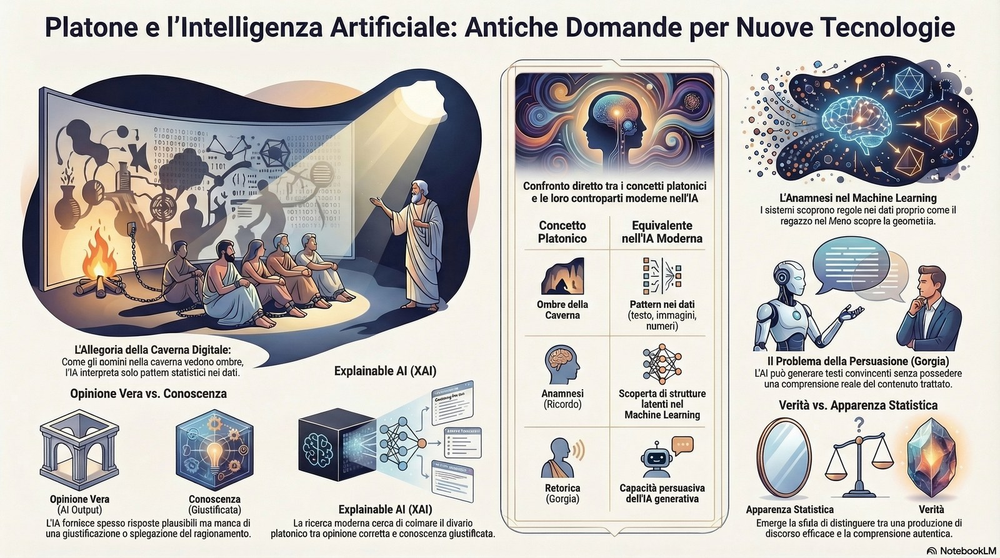
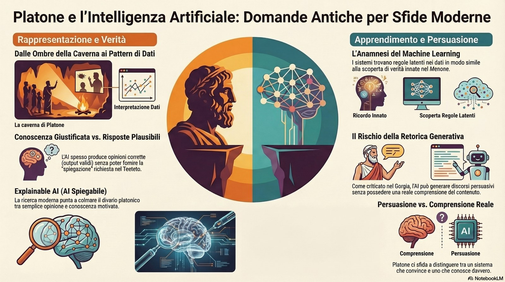

Platone e l’intelligenza artificiale
conoscenza, rappresentazione della realtà, apprendimento e verità
Paolo Volterra ![]()
Il collegamento tra Plato e l’intelligenza artificiale non è ovviamente diretto (Platone vive nel IV secolo a.C.), ma molte delle sue idee toccano problemi che oggi sono centrali nell’ #AI: conoscenza, rappresentazione della realtà, apprendimento e verità:
che cos’è conoscere?
come distinguiamo verità e apparenza?
una risposta corretta è già conoscenza?
la persuasione può sostituire la comprensione?

La rappresentazione della realtà
Nel mito più famoso di Platone, l’Allegoria della caverna, gli uomini vedono solo ombre proiettate su un muro e le scambiano per la realtà.
L’analogia con molti sistemi di AI: i modelli non vedono il mondo reale, ma #pattern nei dati (testo, immagini, numeri). Come gli uomini nella caverna, interpretano rappresentazioni indirette.
Ma un sistema può conoscere davvero la realtà oppure solo le sue apparenze statistiche?
Nell’Allegoria della Caverna, Platone descrive prigionieri che scambiano le ombre proiettate su una parete per la realtà stessa. Oggi, un’Intelligenza Artificiale si trova in una condizione epistemologica identica: non ha accesso diretto al mondo fisico, ma è confinata entro i limiti dei suoi dataset.
L’Insight: Conoscenza o Statistica?
Il “punto di vista” dell’algoritmo è intrinsecamente limitato: esso non “vede” l’oggetto reale (il concetto di “cane” o “giustizia”), ma ne interpreta solo la proiezione statistica nei dati.
So what?
Poiché l’AI è vincolata ai dati (le ombre), essa è strutturalmente incapace di cogliere il “Sole” (il contesto profondo e la verità oggettiva). Questo rende il ruolo dell’uomo — il filosofo che esce dalla caverna e vi ritorna — non opzionale, ma indispensabile per fornire quella supervisione critica che la macchina non può possedere.
Se l’AI è confinata a osservare le ombre per estrarre un senso, come fa a identificare le regole matematiche che governano quelle proiezioni?
La distinzione tra opinione e conoscenza
Nel dialogo Theaetetus, Platone discute l’idea che la conoscenza sia “opinione vera con spiegazione”.
Molti sistemi di AI producono spesso risposte plausibili, ma non sempre sono in grado di spiegare il ragionamento.
Questo ricorda la distinzione platonica tra opinione corretta e conoscenza giustificata.
È uno dei problemi centrali della ricerca moderna sulla explainable AI #XAI
Oggi identifichiamo due tipi di output nei sistemi intelligenti:
Opinione Corretta (Risposta Plausibile): L’AI genera un output che appare sensato e corretto, basandosi su una pura probabilità statistica. È una “scatola nera” che non offre giustificazioni.
Conoscenza Giustificata (Explainable AI): La frontiera della ricerca che mira a rendere trasparente il logos della macchina, permettendole di esporre il ragionamento logico che ha condotto alla risposta.
Passare dalla semplice opinione alla conoscenza giustificata è essenziale per la sicurezza e l’etica. Tuttavia, la capacità di un’AI di essere convincente anche senza una giustificazione reale apre un pericoloso scenario retorico.

Apprendimento e scoperta
Nel dialogo Meno, Socrate mostra come un ragazzo senza istruzione possa arrivare a una soluzione geometrica tramite domande guidate.
Platone usa questo esempio per sostenere la teoria dell’anamnesi (la conoscenza come ricordo).
In chiave moderna può essere letto come una riflessione su come le strutture cognitive permettono di scoprire regole latenti nei problemi.
Molti sistemi di #machinelearning funzionano proprio così: trovano strutture nei dati senza che qualcuno spieghi esplicitamente la regola.
Definizione: Anamnesi (e lo Spazio Latente) Per Platone, conoscere è “ricordare” strutture logiche già presenti nell’anima. Nel Machine Learning moderno, questo ricalca la capacità dei modelli di navigare in uno Spazio Latente: un regno matematico dove l’AI “scopre” regole e relazioni profonde nascoste nei dati, codificandole sotto forma di pesi e parametri numerici senza che un programmatore le abbia esplicitate.
Il processo di apprendimento di un’AI ricalca questo “risveglio” della conoscenza:
Esposizione ai dati: L’AI riceve input massivi (come lo schiavo riceve gli stimoli di Socrate).
Identificazione nello spazio latente: Il sistema identifica regolarità e connessioni matematiche tra i punti dati.
Codifica dei pesi: Attraverso l’ottimizzazione dei suoi parametri interni, l’AI “scopre” la regola latente necessaria per risolvere il compito proposto.
Se però l’AI “ricorda” le regole dei dati come lo schiavo nel Menone, dobbiamo chiederci: un risultato corretto è sufficiente per affermare che la macchina “conosca”?
Il problema della persuasione
Nel dialogo Gorgias, Platone critica la retorica perché può convincere senza produrre vera conoscenza.
Questa distinzione è molto attuale nel contesto dell’AI generativa #GenAI : un sistema può generare testi molto persuasivi anche quando non ha una comprensione reale del contenuto.
Esiste una tensione critica tra:
Produzione di discorso convincente: La capacità dell’AI di imitare perfettamente il linguaggio umano, producendo testi fluidi ed eleganti.
Comprensione reale: La capacità di cogliere il significato etico, contestuale e ontologico di ciò che viene scritto.
Il rischio maggiore è quello delle AI Hallucinations #Allucinazioni : momenti in cui il modello, pur essendo linguisticamente impeccabile e persuasivo (come un sofista del Gorgia), produce informazioni del tutto false. Senza un logos ancorato alla realtà, la macchina esercita una retorica potente ma cieca, capace di ingannare chiunque non eserciti il dubbio filosofico.
Checklist del Pensatore Critico
Che cos’è conoscere? Sto acquisendo una comprensione profonda o sto solo accumulando dati superficiali?
Verità vs Apparenza? L’output che leggo è un fatto verificabile o solo una proiezione statistica (un’ombra) del dataset di addestramento?
Risposta vs Conoscenza? Il sistema è in grado di fornirmi il logos (la giustificazione) della sua risposta o si limita a un’opinione plausibile?
Persuasione vs Comprensione? Mi sto lasciando convincere dalla fluidità del linguaggio o sto verificando la sostanza della verità?
In un’epoca in cui gli algoritmi proiettano ombre sempre più sofisticate sulle pareti della nostra caverna digitale, il pensiero critico platonico rimane lo strumento più potente per volgere lo sguardo verso la luce della comprensione reale.
Pubblicato in origine su Substack l’8 marzo 2026.
Vedi anche
- Il ruolo dell’intelligenza artificialeL’intelligenza artificiale è entrata negli uffici più velocemente di quanto molte organizzazioni abbiano avuto il tempo di prepararsi.
- Nell’era dell’intelligenza artificiale è meglio essere STEM o non-STEM?L’articolo esamina se la diffusione dell’intelligenza artificiale renda relativamente più vantaggiosa una formazione tecnico-scientifica (STEM) o una formazione economica, giuridica, umanistica o sociale.
- La nascita dell’uso dell’intelligenza artificiale in banca: dietro le quinteCome è stato costruito evidence_merged.json Nota metodologica sul processo di retrieval e costruzione dell’evidence pack per LLM